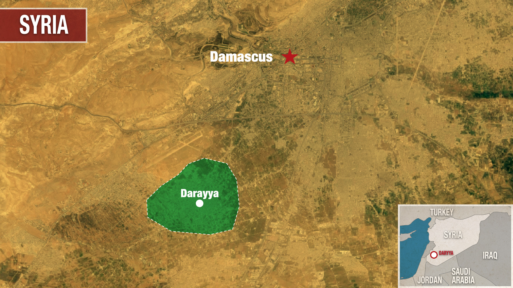
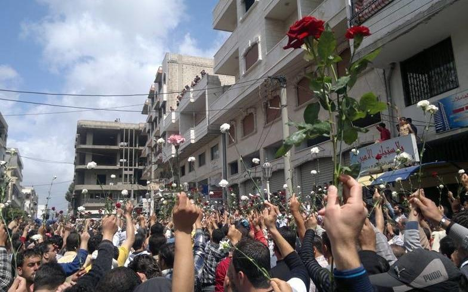

I was born in syria, Damascus I live in the U.S.A. I am a college student at behrend. My major is Digit and English. I enjoy digit and english because i love design and i love learning english because i found a home in it.
| Experinces &Education | Date | major |
|---|---|---|
| JFK center | March-july 2025 | |
| Penn state behrend | 2024-2028 | English &Digit |
| Northwest Pennsylvania Collegiate Academy | 2020-2024 | High school Diploma |
I was born in syria, Damascus and immgrated to jordan then lived my live in the U.S.A. I Speak arabic because i am a native speaker and English because it is the language i grew up with and Spanish beccause I learned it in middle school and high school years and in my first years of college i learned Frensh.

